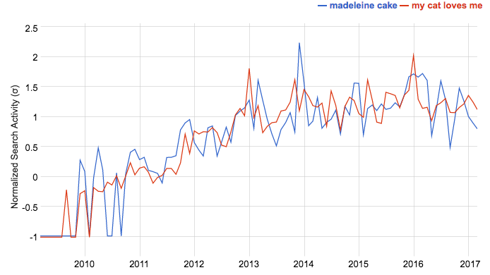
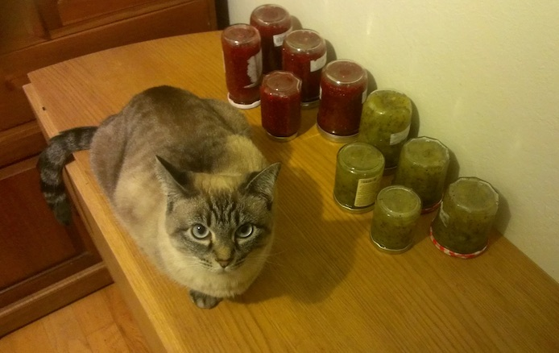

The Google search most correlated (r=0.96) to "madeleine cake" is "my cat loves me" (February 2019).

My quest is over. A cat's love must be the secret ingredient of Madeleines!
It makes total sense, Neige already helped me make jam last year.

Sadly, Google Correlate is no longer available.